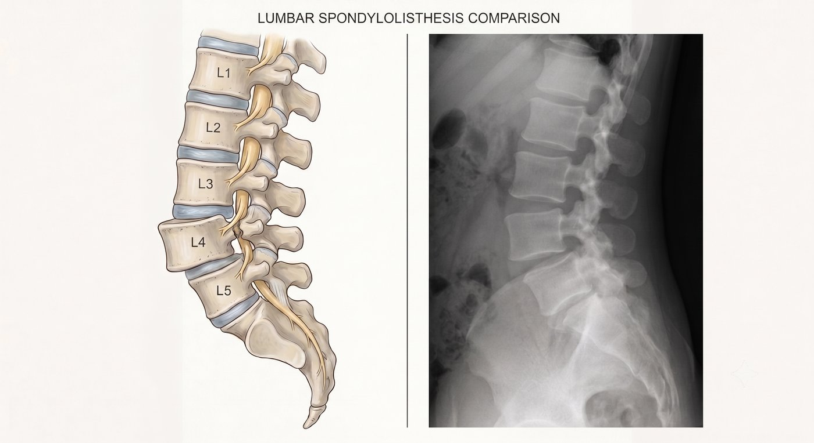

站久腰痠、久坐站起來特別痛？這可能不是單純老化，而是脊椎已經「走位」了。
您是否有過這種經驗：
站著洗碗、排隊沒幾分鐘，下背就酸痛到受不了，必須找東西靠著，或彎腰才稍微舒服。
坐久要站起來的瞬間，腰部像被拉住一樣，必須扶著桌子，分好幾段才能慢慢挺直。
有些人會形容腰部「使不上力」、「空空的」，好像腰沒有辦法穩穩撐住身體；有時不只腰痛，還會合併屁股痠、腳麻、腿痛，甚至走一段路就想坐下休息。
這種情況，就要小心可能不是單純腰痠，而是腰椎滑脫造成的脊椎不穩與神經壓迫。
什麼是腰椎滑脫？
正常的腰椎應該一節一節穩定排列。
當其中一節腰椎因為退化、關節鬆動、椎間盤磨損、椎弓結構問題或外傷，往前或往後滑動，就稱為腰椎滑脫。
簡單來說，就是脊椎骨的位置發生「走位」。
腰椎滑脫可能造成兩種問題：
- 脊椎不穩：造成反覆腰痠、腰痛、站不久，甚至覺得腰部使不上力
- 神經壓迫：造成屁股痠、腳麻、腿痛、走不遠
所以腰椎滑脫不一定只有腰痛。
當滑脫合併神經壓迫時，也可能出現類似坐骨神經痛或腰椎狹窄的症狀。

什麼症狀需要特別注意？
如果出現以下情況，建議儘早由醫師評估：
- 腰痠腰痛反覆發作
- 腰部使不上力，感覺空空的、撐不住
- 久坐站起來時，腰特別酸痛或卡住
- 從床上起身、彎腰後挺直時特別不舒服
- 站久或走久後，腰像撐不住
- 後仰時腰痛更明顯
- 走一段路就需要坐下休息
- 屁股、大腿或小腿出現麻痛、電擊感或抽痛
- 腳麻、腿痠、腿無力反覆出現
- 復健、吃藥或打針後改善有限
- 症狀越來越頻繁，影響工作、睡眠或日常生活
有些患者摸腰部時，會覺得某一節骨頭好像比較凸出或凹陷，但是否真的滑脫，仍需要影像檢查確認。
一般 X 光可以看出腰椎是否滑脫；彎腰、後仰的動態 X 光可以評估脊椎是否不穩定。
如果要確認神經壓迫的位置與嚴重程度，通常需要
安排核磁共振檢查。
一直拖延會怎麼樣？
腰椎滑脫通常不是突然發生，而是隨著退化慢慢變明顯。
一開始可能只是偶爾腰痠，後來變成站久就痛、走久就麻；
原本只是腰不舒服，後來變成屁股、大腿、小腿也開始痠麻。
如果脊椎持續不穩，腰痛可能反覆發作，也可能讓人越來越覺得腰部沒有支撐感。
如果神經持續被壓迫，也可能讓走路距離越來越短，活動量越來越少，肌力與體力慢慢下降。
少數嚴重情況下，長時間神經壓迫可能造成肌力下降、肌肉萎縮、走路不穩，甚至大小便控制異常等較難恢復的後果。
所以，反覆腰痛或腳麻，不一定只是老化。
如果症狀已經影響生活，就不應該只是一直忍耐。
腰椎滑脫一定要開刀打骨釘嗎？
不一定。
很多患者聽到「腰椎滑脫」，就擔心是不是一定要開刀、一定要打骨釘。
其實不是每一個腰椎滑脫都需要手術。
如果滑脫程度不嚴重、脊椎仍然穩定，神經壓迫也不明顯，可以先透過藥物、復健、姿勢調整、核心肌群訓練，或注射治療來改善症狀。
但重點是：
- 您的腰痛，是不是來自脊椎不穩？
- 腳麻腿痛，是不是來自神經壓迫？
- 滑脫的位置和程度，是否真的和症狀相符合？
- 目前是可以先保守治療，還是已經需要進一步處理？
這些都需要在門診透過症狀、身體檢查、X 光與核磁共振檢查一起判斷。
什麼是微創腰椎固定與減壓手術？
如果腰椎滑脫已經造成明顯脊椎不穩，或合併嚴重神經壓迫，且保守治療效果有限，就可能需要評估是否適合手術治療。
手術的目的，不只是處理神經壓迫，也要恢復脊椎的穩定性。
簡單來說，就是幫被壓迫的神經減壓，並在需要的情況下，透過固定與融合，讓不穩定的脊椎重新穩定下來。
微創腰椎手術會透過較小的傷口，在顯微鏡、內視鏡或影像輔助下，處理真正造成症狀的位置，盡量減少對肌肉與正常組織的破壞。
對適合的患者來說，手術目標是：
- 減少神經壓迫
- 改善腰痛、腳麻與腿痛
- 增加走路與站立能力
- 恢復脊椎穩定性
- 幫助回到日常生活
- 腰椎不穩，不一定只是腰痠
很多人因為害怕開刀或打骨釘，選擇一忍再忍。
但如果腰痠、站不久、走不遠、腳麻腿痛，甚至腰部使不上力的感覺已經影響您的生活，就不要只是一直忍耐。
讓專業醫師協助您評估，找出真正的原因，才能選擇最適合您的治療方式。
手術不是目的，重新回到生活才是目的。
把時間留給生活，不留給疼痛。